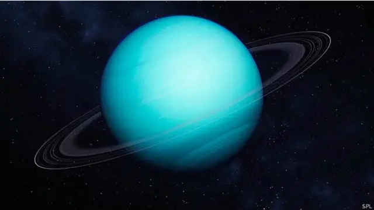

Urano
<
Urano, el séptimo planeta desde el Sol, es un gigante helado único en el sistema solar. Descubierto en 1781 por William Herschel, fue el primer planeta hallado con un telescopio y lleva el nombre del dios griego del cielo, Urano..
